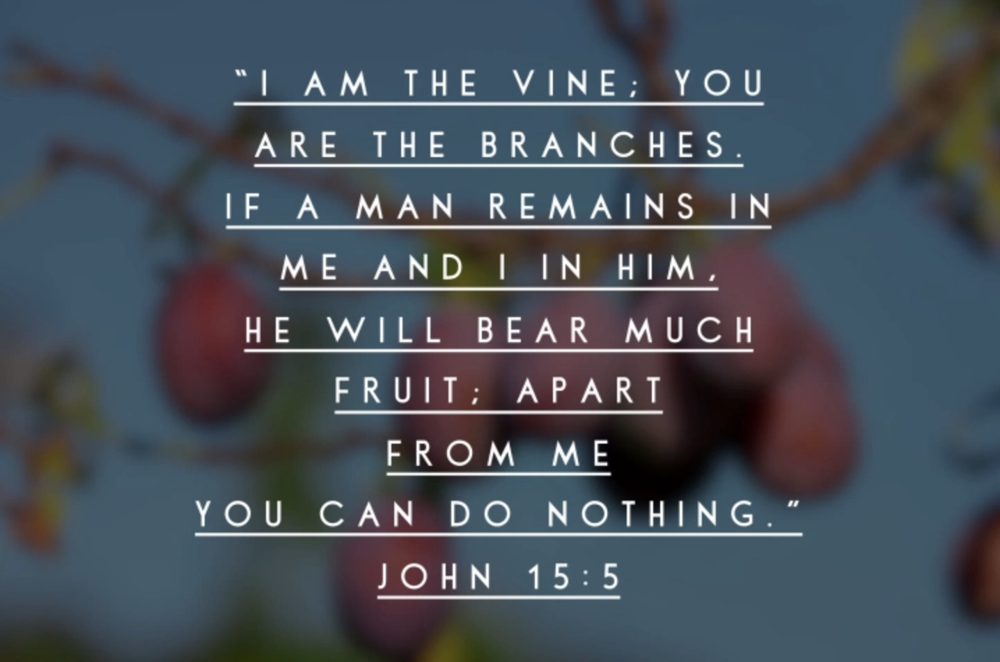
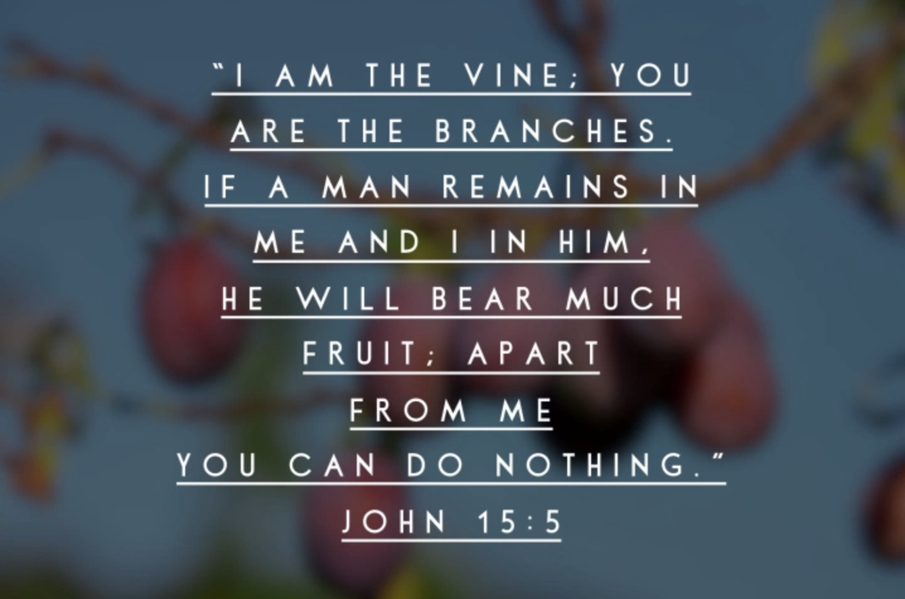
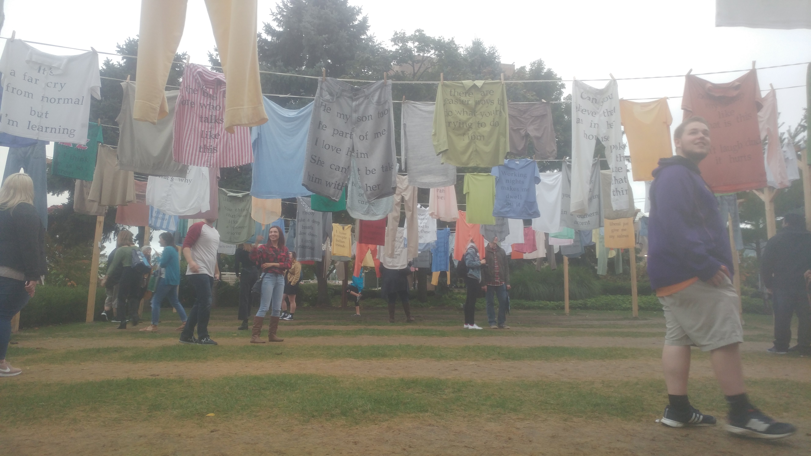
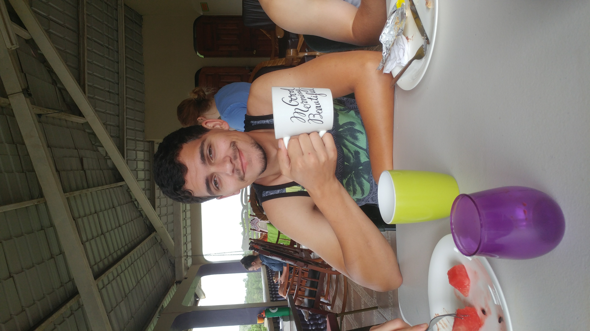
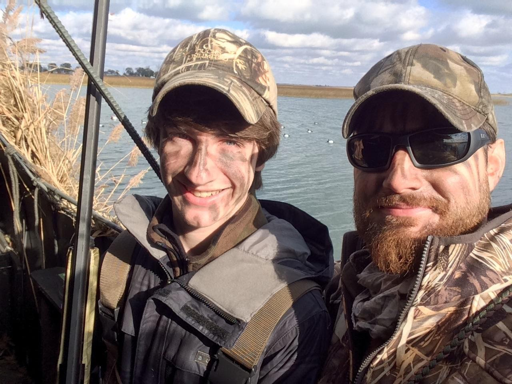
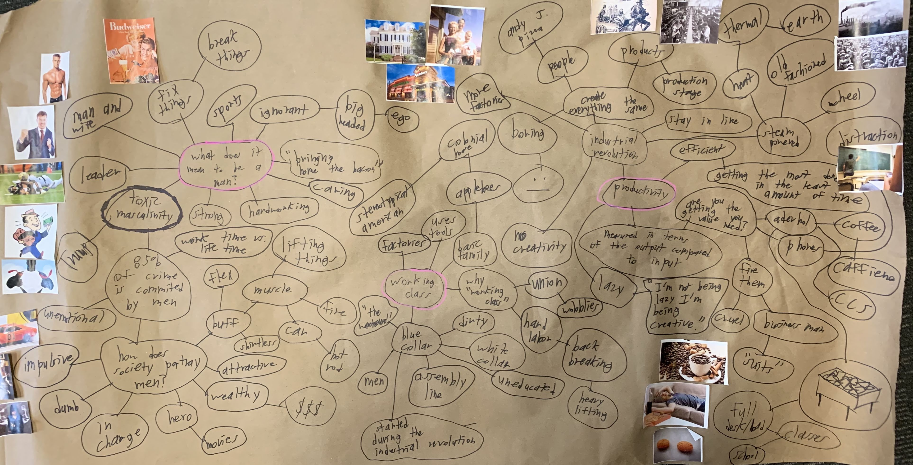

HOME
ROMANS
1 CORINTHIANS
2 CORINTHIANS
GALATIANS
EPHESIANS
PHILIPPIANS
COLOSSIANS
1 THESSALONIANS
2 THESSALONIANS
1 TIMOTHY
2 TIMOTHY
TITUS

COLOSSIANS
1
1
COLOSSIANS 1
C
O
N
T
A
C
T
1 Paul, an apostle of Christ Jesus by the will of God, and Timothy our brother,
2 To God’s holy people in Colossae, the faithful brothers and sisters in Christ:
Grace and peace to you from God our Father.
Thanksgiving and Prayer
3 We always thank God, the Father of our Lord Jesus Christ, when we pray for you, 4 because we have heard of your faith in Christ Jesus and of the love you have for all God’s people— 5 the faith and love that spring from the hope stored up for you in heaven and about which you have already heard in the true message of the gospel 6 that has come to you. In the same way, the gospel is bearing fruit and growing throughout the whole world—just as it has been doing among you since the day you heard it and truly understood God’s grace. 7 You learned it from Epaphras, our dear fellow servant, who is a faithful minister of Christ on our behalf, 8 and who also told us of your love in the Spirit.
9 For this reason, since the day we heard about you, we have not stopped praying for you. We continually ask God to fill you with the knowledge of his will through all the wisdom and understanding that the Spirit gives, 10 so that you may live a life worthy of the Lord and please him in every way: bearing fruit in every good work, growing in the knowledge of God, 11 being strengthened with all power according to his glorious might so that you may have great endurance and patience, 12 and giving joyful thanks to the Father, who has qualified you to share in the inheritance of his holy people in the kingdom of light. 13 For he has rescued us from the dominion of darkness and brought us into the kingdom of the Son he loves, 14 in whom we have redemption, the forgiveness of sins.
The Supremacy of the Son of God
15 The Son is the image of the invisible God, the firstborn over all creation. 16 For in him all things were created: things in heaven and on earth, visible and invisible, whether thrones or powers or rulers or authorities; all things have been created through him and for him. 17 He is before all things, and in him all things hold together. 18 And he is the head of the body, the church; he is the beginning and the firstborn from among the dead, so that in everything he might have the supremacy. 19 For God was pleased to have all his fullness dwell in him, 20 and through him to reconcile to himself all things, whether things on earth or things in heaven, by making peace through his blood, shed on the cross.
21 Once you were alienated from God and were enemies in your minds because of your evil behavior. 22 But now he has reconciled you by Christ’s physical body through death to present you holy in his sight, without blemish and free from accusation— 23 if you continue in your faith, established and firm, and do not move from the hope held out in the gospel. This is the gospel that you heard and that has been proclaimed to every creature under heaven, and of which I, Paul, have become a servant.
Paul’s Labor for the Church
24 Now I rejoice in what I am suffering for you, and I fill up in my flesh what is still lacking in regard to Christ’s afflictions, for the sake of his body, which is the church. 25 I have become its servant by the commission God gave me to present to you the word of God in its fullness— 26 the mystery that has been kept hidden for ages and generations, but is now disclosed to the Lord’s people. 27 To them God has chosen to make known among the Gentiles the glorious riches of this mystery, which is Christ in you, the hope of glory.
28 He is the one we proclaim, admonishing and teaching everyone with all wisdom, so that we may present everyone fully mature in Christ. 29 To this end I strenuously contend with all the energy Christ so powerfully works in me.
COLOSSIANS 2
2 I want you to know how hard I am contending for you and for those at Laodicea, and for all who have not met me personally. 2 My goal is that they may be encouraged in heart and united in love, so that they may have the full riches of complete understanding, in order that they may know the mystery of God, namely, Christ, 3 in whom are hidden all the treasures of wisdom and knowledge. 4 I tell you this so that no one may deceive you by fine-sounding arguments. 5 For though I am absent from you in body, I am present with you in spirit and delight to see how disciplined you are and how firm your faith in Christ is.
Spiritual Fullness in Christ
6 So then, just as you received Christ Jesus as Lord, continue to live your lives in him, 7 rooted and built up in him, strengthened in the faith as you were taught, and overflowing with thankfulness.
8 See to it that no one takes you captive through hollow and deceptive philosophy, which depends on human tradition and the elemental spiritual forces of this world rather than on Christ.
9 For in Christ all the fullness of the Deity lives in bodily form, 10 and in Christ you have been brought to fullness. He is the head over every power and authority. 11 In him you were also circumcised with a circumcision not performed by human hands. Your whole self ruled by the flesh was put off when you were circumcised by Christ, 12 having been buried with him in baptism, in which you were also raised with him through your faith in the working of God, who raised him from the dead.
13 When you were dead in your sins and in the uncircumcision of your flesh, God made you alive with Christ. He forgave us all our sins, 14 having canceled the charge of our legal indebtedness, which stood against us and condemned us; he has taken it away, nailing it to the cross. 15 And having disarmed the powers and authorities, he made a public spectacle of them, triumphing over them by the cross.
Freedom From Human Rules
16 Therefore do not let anyone judge you by what you eat or drink, or with regard to a religious festival, a New Moon celebration or a Sabbath day. 17 These are a shadow of the things that were to come; the reality, however, is found in Christ. 18 Do not let anyone who delights in false humility and the worship of angels disqualify you. Such a person also goes into great detail about what they have seen; they are puffed up with idle notions by their unspiritual mind. 19 They have lost connection with the head, from whom the whole body, supported and held together by its ligaments and sinews, grows as God causes it to grow.
20 Since you died with Christ to the elemental spiritual forces of this world, why, as though you still belonged to the world, do you submit to its rules: 21 “Do not handle! Do not taste! Do not touch!”? 22 These rules, which have to do with things that are all destined to perish with use, are based on merely human commands and teachings. 23 Such regulations indeed have an appearance of wisdom, with their self-imposed worship, their false humility and their harsh treatment of the body, but they lack any value in restraining sensual indulgence.
COLOSSIANS 3
Living as Those Made Alive in Christ
3 Since, then, you have been raised with Christ, set your hearts on things above, where Christ is, seated at the right hand of God. 2 Set your minds on things above, not on earthly things. 3 For you died, and your life is now hidden with Christ in God. 4 When Christ, who is your life, appears, then you also will appear with him in glory.
5 Put to death, therefore, whatever belongs to your earthly nature: sexual immorality, impurity, lust, evil desires and greed, which is idolatry. 6 Because of these, the wrath of God is coming. 7 You used to walk in these ways, in the life you once lived. 8 But now you must also rid yourselves of all such things as these: anger, rage, malice, slander, and filthy language from your lips. 9 Do not lie to each other, since you have taken off your old self with its practices 10 and have put on the new self, which is being renewed in knowledge in the image of its Creator. 11 Here there is no Gentile or Jew, circumcised or uncircumcised, barbarian, Scythian, slave or free, but Christ is all, and is in all.
12 Therefore, as God’s chosen people, holy and dearly loved, clothe yourselves with compassion, kindness, humility, gentleness and patience. 13 Bear with each other and forgive one another if any of you has a grievance against someone. Forgive as the Lord forgave you. 14 And over all these virtues put on love, which binds them all together in perfect unity.
15 Let the peace of Christ rule in your hearts, since as members of one body you were called to peace. And be thankful. 16 Let the message of Christ dwell among you richly as you teach and admonish one another with all wisdom through psalms, hymns, and songs from the Spirit, singing to God with gratitude in your hearts. 17 And whatever you do, whether in word or deed, do it all in the name of the Lord Jesus, giving thanks to God the Father through him.
Instructions for Christian Households
18 Wives, submit yourselves to your husbands, as is fitting in the Lord.
19 Husbands, love your wives and do not be harsh with them.
20 Children, obey your parents in everything, for this pleases the Lord.
21 Fathers, do not embitter your children, or they will become discouraged.
22 Slaves, obey your earthly masters in everything; and do it, not only when their eye is on you and to curry their favor, but with sincerity of heart and reverence for the Lord. 23 Whatever you do, work at it with all your heart, as working for the Lord, not for human masters, 24 since you know that you will receive an inheritance from the Lord as a reward. It is the Lord Christ you are serving. 25 Anyone who does wrong will be repaid for their wrongs, and there is no favoritism.
COLOSSIANS 4
4 Masters, provide your slaves with what is right and fair, because you know that you also have a Master in heaven.
Further Instructions
2 Devote yourselves to prayer, being watchful and thankful. 3 And pray for us, too, that God may open a door for our message, so that we may proclaim the mystery of Christ, for which I am in chains. 4 Pray that I may proclaim it clearly, as I should. 5 Be wise in the way you act toward outsiders; make the most of every opportunity. 6 Let your conversation be always full of grace, seasoned with salt, so that you may know how to answer everyone.
Final Greetings
7 Tychicus will tell you all the news about me. He is a dear brother, a faithful minister and fellow servant in the Lord. 8 I am sending him to you for the express purpose that you may know about our circumstances and that he may encourage your hearts. 9 He is coming with Onesimus, our faithful and dear brother, who is one of you. They will tell you everything that is happening here.
10 My fellow prisoner Aristarchus sends you his greetings, as does Mark, the cousin of Barnabas. (You have received instructions about him; if he comes to you, welcome him.) 11 Jesus, who is called Justus, also sends greetings. These are the only Jews among my co-workers for the kingdom of God, and they have proved a comfort to me. 12 Epaphras, who is one of you and a servant of Christ Jesus, sends greetings. He is always wrestling in prayer for you, that you may stand firm in all the will of God, mature and fully assured. 13 I vouch for him that he is working hard for you and for those at Laodicea and Hierapolis. 14 Our dear friend Luke, the doctor, and Demas send greetings. 15 Give my greetings to the brothers and sisters at Laodicea, and to Nympha and the church in her house.
16 After this letter has been read to you, see that it is also read in the church of the Laodiceans and that you in turn read the letter from Laodicea.
17 Tell Archippus: “See to it that you complete the ministry you have received in the Lord.”
18 I, Paul, write this greeting in my own hand. Remember my chains. Grace be with you.
Do you feel like you are growing in your relationship with the Lord?
YES
NO
If you could change one part of your life right now what would it be?
 

Colossians allows believers to reflect on their own lives as they read it with certain sins or flaws that often go unnoticed by them, or by their friends and family. Paul wrote this letter to address how some members of the church were being taken advantage of and led astray which we all need to be on guard against. How we relate with one another and how often we stay in contact can make huge differences in all of our lives, if the believers in Colossians had been better about this maybe so many of them would not have been led astray.
   